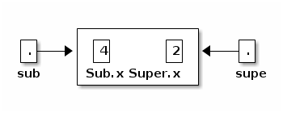

notes16
Table of Contents
Lecture 16
Today's reading: Sierra & Bates, pp. 189, 283.
EXCEPTIONS (continued)
The "finally" keyword
A finally clause can also be added to a "try."
FileInputStream f = new FileInputStream("filename"); try { statementX; return 1; } catch (IOException e) { e.printStackTrace(); return 2; } finally { f.close(); }
If the "try" statement begins to execute, the "finally" clause will be executed at the end, no matter what happens. "finally" clauses are used to do things that need to be done in both normal and exceptional circumstances. In this example, it is used to close a file.
If statementX causes no exception, then the "finally" clause is executed, and 1 is returned.
If statementX causes a IOException, the exception is caught, the "catch" clause is executed, and then the "finally" clause is executed. After the "finally" clause is done, 2 is returned.
If statementX causes some other class of exception, the "finally" clause is executed immediately, then the exception continues to propagate down the stack.
In the example above, we've invoked the method "printStackTrace" on the exception we caught. When an exception is constructed, it takes a snapshot of the stack, which can be printed later.
It is possible for an exception to occur in a "catch" or "finally" clause. An exception thrown in a "catch" clause will terminate the "catch" clause, but the "finally" clause will still get executed before the exception goes on. An exception thrown in a "finally" clause replaces the old exception, and terminates the "finally" clause and the method immediately.
However…you can nest a "try" clause inside a "catch" or "finally" clause, thereby catching those exceptions as well.
Exception constructors
By convention, most Throwables (including Exceptions) have two constructors. One takes no parameters, and one takes an error message in the form of a String.
class MyException extends Exception { public MyException() { super(); } public MyException(String s) { super(s); } }
The error message will be printed if it propagates out of main(), and it can be read by the Throwable.getMessage() method. The constructors usually call the superclass constructors, which are defined in Throwable.
GENERICS
Suppose you're using a list of Objects to store Strings. When you fetch a String from the list, you have to cast it back to type "String" before you can call the methods exclusive to Strings. If somehow an object that's not a String got into your list, the cast will throw an exception. It would be nice to have the compiler enforce the restriction that nothing but Strings can ever get into your list in the first place, so you can sleep at night knowing that your family is safe from a ClassCastException.
So Java offers generics, which allow you to declare general classes that produce specialized objects. For example, you can create an SList for Strings only, and another SList for Integers only, even though you only wrote one SList class. To specify the class, SList takes a type parameter.
class SListNode<T> { // T is the formal parameter. T item; SListNode<T> next; SListNode(T i, SListNode<T> n) { item = i; next = n; } } public class SList<T> { SListNode<T> head; public void insertFront(T item) { head = new SListNode<T>(item, head); } }
You can now create and use an SList of Strings as follows.
SList<String> l = new SList<String>(); // String is the actual parameter. l.insertFront("Hello");
Likewise, you can create an SList of Integers by using "SList<Integer>" in the declaration and constructor.
What are the advantages of generics? First, the compiler will ensure at compile-time that nothing but Strings can ever enter your SList<String>. Second, you don't have to cast the Objects coming out of your SList back to Strings, so there is no chance of an unexpected ClassCastException at run time. If some bug in your program is trying to put Integer objects into your SList, it's much easier to diagnose the compiler refusing to put an Integer into an SList<String> than it is to diagnose a ClassCastException occurring when you remove an Integer from a regular SList and try to cast it to String.
Generics are a complicated subject. Consider this to be a taste of them; hardly a thorough treatment. A good tutorial is available at https://www.seas.upenn.edu/~cis1xx/resources/generics-tutorial.pdf .
Although Java generics are superficially similar to C++ templates, there's a crucial difference between them. In the example above, Java compiles bytecode for only a single SList class. This SList bytecode can be used by all different object types. It is the compiler, not the bytecode itself, that enforces the fact that a particular SList object can only store objects of a particular class. Conversely, C++ recompiles the SList methods for every type that you instantiate SLists on. The C++ disadvantage is that one class might turn into a lot of machine code. The C++ advantages are that you can use primitive types, and you get code optimized for each type. Java generics don't work with primitive types.
FIELD SHADOWING
Just as methods can be overridden in subclasses, fields can be "shadowed" in subclasses. However, shadowing works quite differently from overriding. Whereas the choice of methods is dictated by the dyanamic type of an object, the choice of fields is dictated by the static type of a variable or object.
class Super { int x = 2; int f() { return 2; } } class Sub extends Super { int x = 4; // shadows Super.x int f() { // overrides Super.f() return 4; } }
Any object of class Sub now has two fields called x, each of which store a different integer. How do we know which field is accessed when we refer to x? It depends on the static type of the expression whose x field is accessed.
Sub sub = new Sub(); Super supe = sub; // supe and sub reference the same object. int i;

i = supe.x; // 2 i = sub.x; // 4 i = ((Super) sub).x; // 2 i = ((Sub) supe).x; // 4
The last four statements all use the same object, but yield different results. Recall that method overriding does not work the same way. Since both variables reference a Sub, the method Sub.f always overrides Super.f.
i = supe.f(); // 4 i = sub.f(); // 4 i = ((Super) sub).f(); // 4 i = ((Sub) supe).f(); // 4
What if the variable whose shadowed field you want to access is "this"? You can cast "this" too, but a simpler alternative is to replace "this" with "super".
class Sub extends Super { int x = 4; // shadows Super.x void g() { int i; i = this.x; // 4 i = ((Super) this).x // 2 i = super.x; // 2 } }
Whereas method overriding is a powerful benefit of object orientation, field shadowing is largely a nuisance. Whenever possible, avoid having fields in subclasses whose names are the same as fields in their superclasses.
Static methods can be shadowed too; they follow the same shadowing rules as fields. This might seem confusing: why do ordinary, non-static methods use one system (overriding) while static methods use an entirely different system (shadowing)? The reason is because overriding requires dynamic method lookup. Dynamic method lookup looks up the dynamic type of an object. A static method is not called on an object, so there's nothing whose dynamic type we can look up. Therefore, static methods can't use dynamic method lookup or overriding. So they use shadowing instead.
Static method shadowing, like field shadowing, is largely a nuisance.
"final" METHODS AND CLASSES
A method can be declared "final" to prevent subclasses from overriding it. Any attempt to override it will cause a compile-time error.
A class can be declared "final" to prevent it from being extended. Any attempt to declare a subclass will cause a compile-time error.
The only reason to declare a method or class "final" is to improve the speed of a program. The compiler can speed up method calls that cannot be overridden.